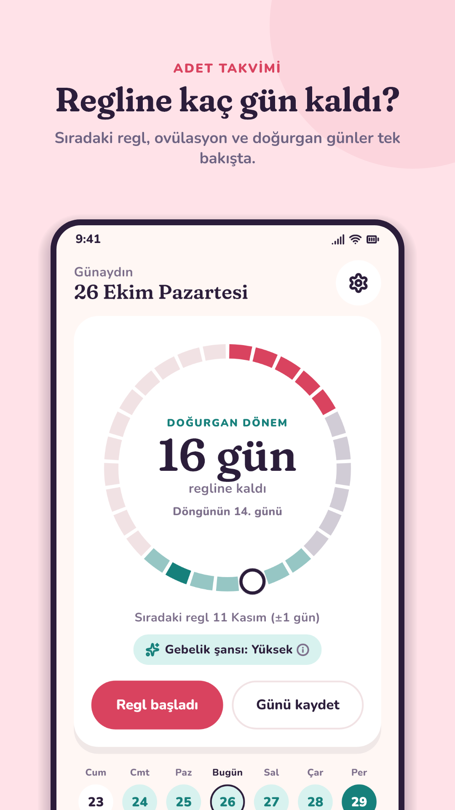
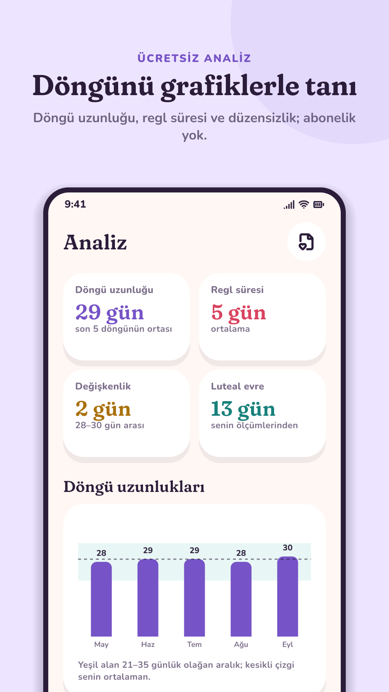
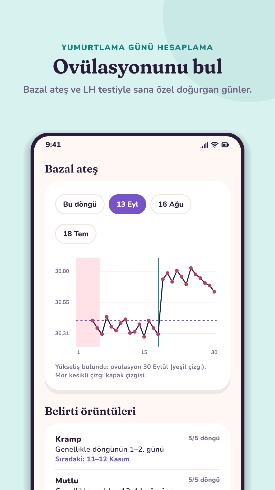

Menia: Adet Takvimi ve Regl Takibi
Sıradaki reglini, ovülasyon (yumurtlama) gününü ve doğurgan günlerini bil; belirtilerini kaydet, döngünün ritmini tanı. Hesap yok, kayıtların sadece telefonunda. Analiz ve doktor raporu dahil bütün özellikler ücretsiz.
Google Play'den ücretsiz indir


Ücretsiz hesaplayıcılar
Adet takvimi hesaplama
Sonraki 6 reglin, ovülasyon ve doğurgan günler.Yumurtlama günü hesaplama
Ovülasyon günün ve hamile kalma şansının en yüksek olduğu günler.Adet gecikmesi hesaplama
Reglin kaç gün gecikti, gebelik testi ne zaman?Doğum tarihi hesaplama
Tahmini doğum tarihi ve gebelik haftası.Adet takvimi ve regl takibi
"Regl başladı" ve "Regl bitti" ile tek dokunuşta kayıt tutarsın. Menia son döngülerinin ortalamasıyla sıradaki reglini hesaplar, ne kadar şaşabileceğini (± gün) gösterir ve 12 döngü ileriye kadar adet takvimini çıkarır. Regl gecikirse günleri sayar, istersen hatırlatır.
Ovülasyon ve yumurtlama günü
Tahmini ovülasyon gününü, doğurgan dönemini ve her gün için gebelik şansını görürsün. Ovulasyon (LH) testi sonuçlarını ve sabah bazal vücut ısını kaydedersen Menia yumurtlama gününü senin ölçümlerinle bulur ve luteal evreni öğrenir. "Hamile kalmak istiyorum" modu doğurgan günleri ve testleri öne çıkarır.
Belirti günlüğü ve ücretsiz analiz
Kramp, baş ağrısı, şişkinlik, sivilce, ruh hali, enerji, uyku, akıntı ve 40'tan fazla belirtiyi kaydet. Menia döngü uzunluğu ve regl süresi grafiklerini çizer, belirti örüntülerini bulur ("Baş ağrısı genellikle reglden 2 gün önce") ve önümüzdeki günlerde nelerin beklenebileceğini söyler. Birçok uygulamada abonelikle sunulan bu analizler Menia'da ücretsiz.
Doktor raporu
Son 3, 6 ya da 12 döngünü tek bir PDF'te topla: regl tarihleri, döngü uzunlukları, ovülasyon, tekrarlayan belirtiler, bazal ateş ve notlar. Kadın doğum uzmanına giderken yanına al.
Her dönem için bir mod
Regl takibi, hamile kalmak, doğum kontrolü (hap, halka, bant ve 3 aylık iğne hatırlatıcısı), perimenopoz ve hamilelik. Hangi dönemdeysen Menia ona göre değişir.
Gizlilik önce gelir
Hesap yok, sunucu yok, bulut yedeği yok: regl ve sağlık kayıtların yalnızca telefonunda. PIN, parmak izi ya da yüz kilidi, son uygulamalar ekranında içeriği gizleme ve ne hakkında olduğunu söylemeyen gizli bildirimler. Ayrıntılar gizlilik politikasında.
Sık sorulan sorular
Menia ücretsiz mi?
Evet. Analiz, belirti örüntüleri, doktor raporu, modlar ve hatırlatıcılar dahil bütün özellikler ücretsizdir. Bazı ekranlarda küçük reklamlar vardır; istersen tek seferlik ödemeyle kaldırabilirsin, abonelik yoktur.
Regl kayıtlarım nerede saklanıyor?
Yalnızca telefonunda. Menia hesap istemez ve kayıtlarını hiçbir sunucuya göndermez; telefonun bulut yedeğine bile almaz. Telefon değiştirirken kendi yedek dosyanı kullanırsın.
Menia doğum kontrol yöntemi olarak kullanılabilir mi?
Hayır. Ovülasyon ve doğurgan gün tahminleri planlama içindir; gebelikten korunmak için kullanılmamalıdır.
Menia iPhone'da var mı?
Şimdilik yalnızca Android için Google Play'de.
Google Play'den indir